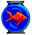
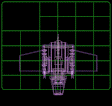
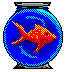
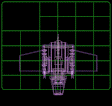
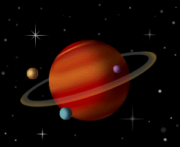

the smell of incense and moss fills the air...
Lore
Mi nombre es Santiago Sibilla, tengo 21; me gusta la tecnología y la informatica en general. Me gusta mucho la música (check the tunes page...), y el audio HIFI; También colecciono CDs  , vinilos, y etc.
Además de programar [no quiero mas ], viciar [juegos viejos o rpgs + q nada... ], y emplear el diseño y la creatividad tanto en el diseño de esta web, y en la vida real , siempre estoy aprendiendo, probando nuevas técnicas [grax profe por explicar bien!!
, vinilos, y etc.
Además de programar [no quiero mas ], viciar [juegos viejos o rpgs + q nada... ], y emplear el diseño y la creatividad tanto en el diseño de esta web, y en la vida real , siempre estoy aprendiendo, probando nuevas técnicas [grax profe por explicar bien!!  ] y herramientas para mejorar en el diseño de mis proyectos, e intentar compartir mi conocimiento con mis pares. .
En este sitio vas a encontrar musica
] y herramientas para mejorar en el diseño de mis proyectos, e intentar compartir mi conocimiento con mis pares. .
En este sitio vas a encontrar musica  muy basada, diseño y inspo from the 2000s  , collages de imagenes raras que me llamen la atención , y only good vibes .
muy basada, diseño y inspo from the 2000s  , collages de imagenes raras que me llamen la atención , y only good vibes .
